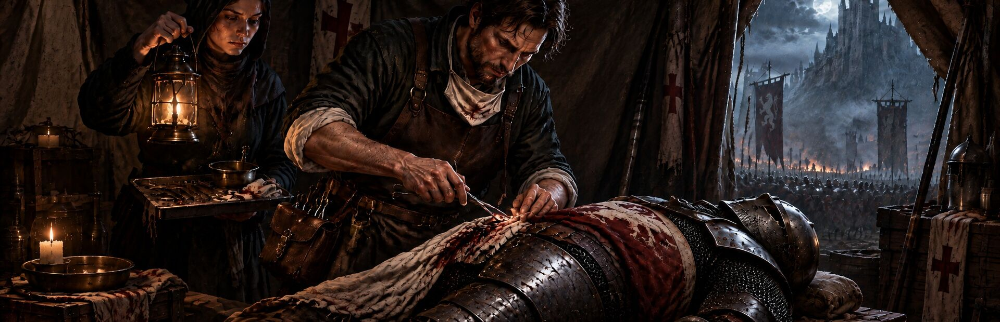

RPG · Simulation
Field Surgeon
Scrub in as a field surgeon in a plague-ridden free city at war. Humans, dwarves, elves, orcs, hornfolk and giants come to your table. Draw arrows from bone, close sabre cuts, saw shattered limbs, and face the Malison: a curse that fights back from inside your patients.
About
Kessendorf is dying, one patient at a time.
Plague smoulders in the Tanners' Rows, the Ostrau company is fighting at the city's gates, and the Hospice of Saint Ildra takes in everyone the city throws away. You are its newly sworn apothecary-surgeon, and the table is never empty.
Surgery the way a sawdoctor did it.
Eight period instruments: lancet, tongs, leech-pipe, gut thread, Saint's salve, tincture, cautery brand and scrying lens, each with its own motion. Ease an arrow through the muscle that grips it, rock a head loose from the bone, close a sabre cut muscle first and skin second, soften boiling pitch before you lift it, wind a tourniquet before you look for the bleeding vessel, and seal a sucking chest wound as the patient breathes out. Every action is graded; clean chains raise your rank.
Every patient comes from a different culture, with its own anatomy.
Six races to learn. Humans, dwarves, elves, orcs, hornfolk and giants all come through the Hospice doors, and no two cut, bleed or heal alike. A dwarf's hide is thick and his blood dark and slow; the lancet must work patiently. An elf's skin is so thin the lamp glows through it: easy to open, quick to bleed, and unforgiving of a slip. An orc's leather hide turns a hasty blade, his near-black blood clots fast, and tinctures barely touch him. A giant bleeds out slowly and heals slower still. Know your patient before you cut.
A prayer that stops the clock or could send you to the pyre.
Draw the five-pointed sign to invoke the Litany of Stillness and slow time for a few precious seconds, once per operation. Careful: if the Inquisitor of the Ash Tribunal sees it, he will condemn you for witchcraft.
Bosses that live inside your patients.
A heretic coven, the Hollow Choir, weaves living curses named for the canonical hours: Matins, Lauds, Prime and five more. Each Malison fights back with its own phases and tricks, and each one leaves a mark on the city.
A grim story told in candle smoke and ink.
Story chapters between operations, set to an orchestral and medieval score: guild politics, witch hunts, field hospitals, black humour, and the question of what a healer owes a city that burns its sick.
Features
- Five chapters, over sixty operations, eight Malison Hours: a surgery-action campaign in a grimdark early-modern world
- Injuries surgeons really faced: arrows, sabre cuts, crushing mace blows, boiling pitch, severed arteries, amputations
- Eight period instruments with precise mouse-and-keyboard controls, controller and Steam Deck support
- Graded, combo-driven operations with ranks to chase in every case, plus Guild Trials and Challenge operations
- Assists and accessibility options: generous timers, simplified gestures, one-handed play, a Litany key, reduced flashing and gore settings
Screenshots


Clips
-
First, get his armour off -
Open him up. Find the rot. -
Surgery in a city at war
Follow
Clips from all four games, posted as @TrevorGamesHQ.